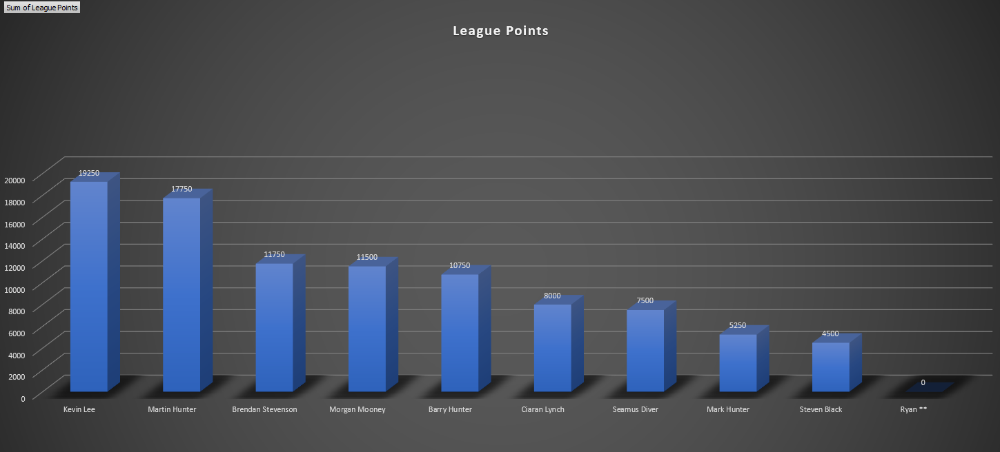
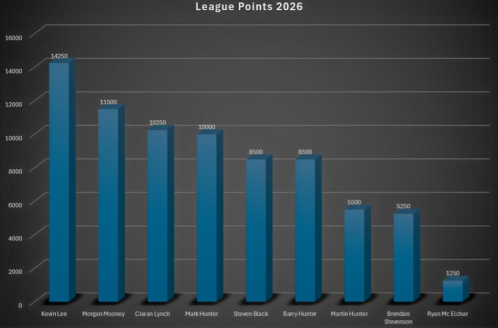
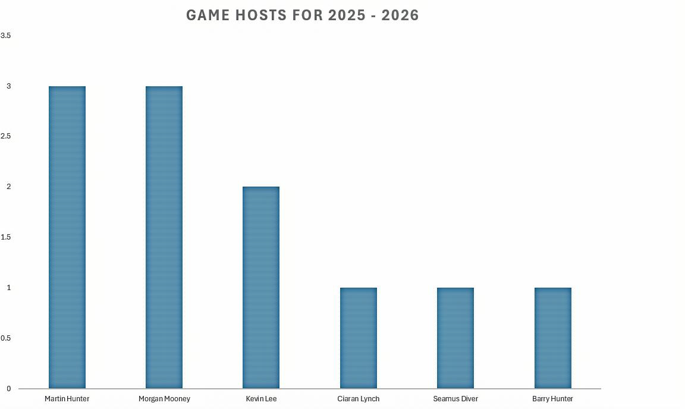
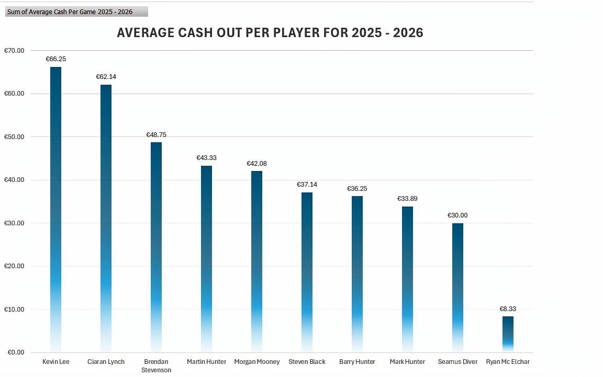

Introduction
The 2002 Cardroom — Where Legends are made fo fall
- Event Manager: Martin Hunter
- Tournament Director: Ciaran Lynch
The 2002 Cardroom hosts exclusive, home‑based poker events in plush surroundings across the Letterkenny area.
Games are strictly invite‑only. Some of the OG players have been gathering since 2002 — over 23 years of cards, craic, and questionable decisions.
League Ethos
Competitive poker, a few beers, a bit of craic, dramatic rebuys, and the occasional Bollywood bluff.
“We strive for excellence… and world class poker commentary.” — Martin

Game Structure
Nightly Tournament Structure
The tournament is played over 6 levels:
- Levels 1–5: 30 minutes each
- Level 6: 45 minutes
- 25‑minute break after Level 3
- 15‑minute break after Level 5
Buy‑in: €30
Starting stack: 30,000 chips (15,000 + free 15,000 add‑on)
Rebuy / Top-Up: €20 = 20,000 chips
Max 1 per game, must be used before the end of Level 5.
End of Level 6
- Chips ÷ 1000 = cash‑out amount
- Chips × 50 = league points
Hosts & Schedule
The tournament proposed dates:
- Event 1 : 2 January 2026 - Host: Barry
- Event 2 : 23 January 2026 - Host: Ciaran
- Event 3 : 13 February 2026 - Host: Martin
- Event 4 : 6 March 2026 - Host: Morgan
- Event 5 : 3 April 2026 - Host: Ciaran
- Event 6 : 17 April 2026 - Host: TBC
- Event 7 : 15 May 2026 - Host: TBC
- Event 8 : 19 June 2026 - Host: TBC
- Event 9 : 17 July 2026 - Host: TBC
- Event 10 : 14 August 2026 - Host: TBC
- Event 11 : 11 September 2026 - Host: TBC
- Event 12 : 16 October 2026 - Host: TBC
- Event 13 : 6 November 2026 - Host: TBC
- Event 14 : 4 December 2026 - Host: TBC
- Champions League Final will be on December 2026, Date TBC - Host: TBC
Players
2025 Season Blog
Highlights of Opening Night — 24 January 2025... A Storm is brewing...
Storm Éowyn wasn’t enough to put off six brave poker players. As Éowyn turned half the town dark, Martin told his better half, "The cold and dark could do us some harm, so i'm off somewhere warm, for a few beers and a bit of a laugh". Unfortunately, two squad players — Brendan and Steven — still have morals!
As usual, Morgan arrived just in time for the first break.. Harumph.. Seeing Pocket 5s four times with a bit of glee, he held up three — but his 99 and QQ fell to the sword, when Kevin Lee called the board. Hard to beat Kevin’s 7-2 off suit, as usual on the river stealing all the loot...Harumph..
The River Lee was in full flow, not a rebuy in sight — until he made the Director's night. As the night drew to a close, counting his stack, he raised three times, with his pocket 88 pack. Undetterred by the reraise move, Kevin jumps into the groove, to steal the show with an all-in throw. Sadly for him, Lynch throws KK onto the felt, Lee's Poker stack soon did melt. So shocked was I from Lee's play, that I collapsed on the chair, doing more damage than Éowyn today.
Bollywood bluffs were the star of the show, as his nut farts did blow on moving his hip, he still had to use his orange rebuy chip. A poker of 6s kept alive the Bollywood gaze, until he sheepishly folded to a K4 river Diver raise.
Who raised six times the big blind with pocket 10s and got called by 8-5 offsuit and looses all his loot? Our events manager. Unbelievable, Jeff!
Man Of The Match... The massive ROI play from Lynch and the smashing of the place, stole the show on the night
Season Conclusion — 2025
The 2025 League has officially come to a close, a year of the odd dumb-ass play and the usual drunk comment arose. Martin couldnt keep the momentum up and as his hands faded from lifting the Cup.
With a final night of Bollywood nut farts and Kevin Lee chasing a flush of hearts. Brendan attacked the table with his mighty full house, sure he can't loose, only for Captain Morgan to demolish his mica bricks, with the poker of two's.
After months going all-in like at an all-inclusive buffet, Kevin Lee emerged as the 2025 Champ without delay, as he hopes Arsenal follows his lead into May.
How could the Events Manager allow such multiple illegal rebuys!
Thanks to the Event Manager and Champions League qualifier, Martin — ROI Champion!
Player Results — 2025
Leaderboard — 2025
Season Conclusion — 19th December 2025
The 2002 Cardroom League for 2025 has officially come to a close...Congrats to Champions League Winner.... Kevin Lee
Stayed tuned for more excitement for 2026 season...
League Points
2026 Season Blog — League Overview & New Format
The 2026 season kicks off on Friday, 2nd January 2026, bringing a refreshed league structure, stricter rules, and a brand‑new competitive format. This year also introduces the optional Champions League Final, giving players a high‑stakes finale to aim for.
Highlights of League Opening Night — 2 January 2026... Winter is Coming...
Attendance: 8 players — beer count: medium.
Another cold start to January, with the snow falling we were losing a few, Brendan said a big No to Carlow! and joined the warm crew.
As usual, Morgan arrived just in time... Harumph... and went on a demolition with great Derby Pride, as Lynch's bets got taken for a ride.
The River Lee, not content with a League Title in 2025, ended the night on top, showing Lynch that J7 is much better than AJ on the flop.
Young Ryan, finally seeing a properly run game, was here to see his manager and mentor, Barry "Bollywood" by name. Looking for the thrill of seeing Barry's legendary gaze and world class poker skill. They say you should never meet your hero, as his awe slowly faded, like Barry's poor show. But as Barry eloquently told him — "numb, mumb, blumb, mmm river, but but buts"... following a mouthful of his favourite nuts.
Young Mark made another appearance, finding the going tough on those dodgy flops, as he was continually outplayed by Hunter pops,in the end he was glad to sit and watch the darts, just far enough away from uncle's farts.
So the Event Manager, keen to impress his young kin, watched his chips crash down, like his bunker in Berlin.
Man Of The Match... Solid performance, with a tinge of luck, the award goes to Kevin.
Highlight of Event 2 — 23 January 2026... The Night of the Sage...
Attendance: 7 players — beer count: high.
You just had to be there! Classic magic, monster hands as rare as a Morgan fold, and world‑class poker commentary was the tale to be told.
As usual, J7 tortured the Director, this time from the Derby brigade. Lynch was driven to despair when his AQ witnessed J7 again hit two pair. With the usual chuckle and a Moretti in hand, out he calls, "Fair Enough! i know your on the bluff", Nada Mas, Nada Mas, Lynch had enough. Although Morgan's calls he could not stop, the Mooney chips soon faded, like his new Blondie top.
The River Lee will forget this one, certainly not making his top 10 hits as his zero points ended his night in pits. When Kevin and Morgan play like Podge and Rodge, you know it's time to get out of Dodge.
Young Ryan called in sick, still devastated by mentor Barry "Bollywood's" last event — his love for Poker had taking a dent
Mark had a tough night defending attack after attack, against the drunk bully Mr Black. Steven's courage did appear, after sinking the odd Polish beer and his trip Kings giving cause for a cheer! But Mark did smile and tease "A full house beats trips with ease"... Taxi for Mr Black please.
Still, after the usual Morgan tax bill, Steven was crowned the King of the Hill. He dazzled all with magic card show, bringing awe and delight to Kevin's poor night, helping him forget his terrible low.
But the best card show of the night was presented by Captain Morgan, with great delight. As the board did show 9, 10, J of hearts...Barry's own heart felt a bit of a rush, as Morgan throws up.. Yep — a straight flush!!
BUT WAIT — THERE'S MORE
Just when you thought Middle Earth was all magical and nice, this one was worth more the entry price, for our victor was treated to some sage advice.
Up steps the Event Manager, Gandalf like he did tread — "You should have bet, cause you were probably ahead"
Yes folks, in a heads‑up showdown, a straight flush has a good chance of taking the crown.
This is poker commentary at its best. Poker strategy books will be put to the test.
BUT WAIT — THERE'S MORE
With the Polish beer sinking in and a few before up "in the bin", it's time for Steven to push all‑in.
It was a Barry raise and just in time for the Bollywood gaze... tick tock, tick tock... Just when you thought our poker knowledge had learned enough, Barry announced — "You have either a good hand or it's a bluff."
This new poker book writes itself
- Chapter 1 — A Full House beats trip Kings
- Chapter 2 — A Straight Flush on the river is possibly the best hand heads‑up
- Chapter 3 — An all‑in on the river is either a good hand or it isn't
Congrats to Steven for a top recovery, and Morgan's straight flush moving him into pole position in the Champions League.
Man Of The Match... tough one between Steven for a marvelous comeback and Morgan's Straight Flush. But Steven edges it, especially for his Beer consumption
Highlight of Event 3 — 13 February 2026... The Night of Bromance...
Attendance: 7 players — beer count: low.
A slow start to a frosty night, but cupid was in the air as the early straddle was the usual fair. Kevin did min raise with 2 & 6, to catch some bait and as usual hit the straight
Lynch was caught between Morgan and Mr Black, noticing Steven's romantic glance at Morgans rack, but they both enjoyed taking ciaran's stack. His night turned into a bit of a balls, 8 times the BB raise, gets 6 calls.
Steven's night started a bit of a lull, until his pocket J's made his face less dull. Ace on the flop made his heart stop, but alas, the JJ on the board, was just class. Poor Morgans chips took a bit of a cull
Barry was back from his exotic trip, but no nuts tonight, so nothing did rip. His early play was doing more harming than his Indian curry in Puerto Del Carmen
The night got tough when each raise was met with, "Fair enough, I know your on the bluff". Morgan's our poker puriest, he see's more hands than a manicurist. All bluffs are put down when the puriest is in town. Jack five, Seven Three, he will fight your bluffs with courage and glee. Martin was left sitting like a mouse, when Morgan's 73 hit the Full House
Martin was left to wonder and moan, as his chips disappeared quicker than a Credit Union loan. What has happened to the 2025 ROI king, as he's near the bottom of the league, lingering...
Man Of The Match... Great comeback from Barry, the main man, his chips having more colour than his farmers tan
Champions League Format
The Champions League entry fee is €100 per player, spread across the year (typically €10 over 10 nights). We aim to play 12 - 14 league games, with each player’s best 10 performances counting towards their final league points.
These points become your starting stack in the end‑of‑year Champions League Tournament, which is free to enter for all paid‑up players.
Any player who cannot play the full 10 games may pay the balance due to make up 10 games and will receive 1,000 tournament chips per €10.
Champions League Payout Structure
- Overall League Winner – 15%
- Tournament Champions League Final Winner – 25%
- Tournament 2nd Place – 15%
- Tournament 3rd Place – 12%
- Tournament 4th Place – 10%
- Tournament 5th Place – 8%
- Tournament 6th Place – 5%
- Tournament 7th Place – 5%
- Tournament 8th Place – 5%
- Note: Any paid up player with less than 10,000 chips earned during the league, will begin the final with a minimum stack of 10,000.
Player Results — 2026
Leaderboard — 2026
League Points 2026
Game Hosts for 2025 - 2026
Average Cash Out Per Player for 2025 - 2026
Season Conclusion — 2026
Season summary will appear here.